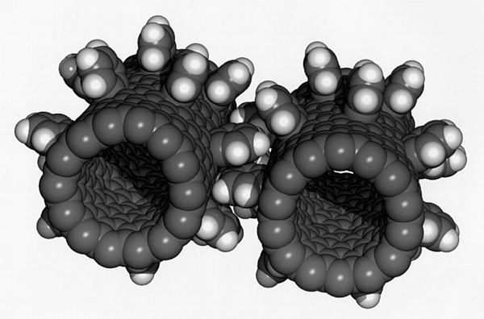

Nanotechnology
 Article link hereNanotechnology, also shortened to nanotech, is the use of matter on an atomic, molecular, and supramolecular scale for industrial purposes. The earliest, widespread description of nanotechnology referred to the particular technological goal of precisely manipulating atoms and molecules for fabrication of macroscale products, also now referred to as molecular nanotechnology.[1][2] A more generalized description of nanotechnology was subsequently established by the National Nanotechnology Initiative, which defined nanotechnology as the manipulation of matter with at least one dimension sized from 1 to 100 nanometers. This definition reflects the fact that quantum mechanical effects are important at this quantum-realm scale, and so the definition shifted from a particular technological goal to a research category inclusive of all types of research and technologies that deal with the special properties of matter which occur below the given size threshold. It is therefore common to see the plural form "nanotechnologies" as well as "nanoscale technologies" to refer to the broad range of research and applications whose common trait is size.